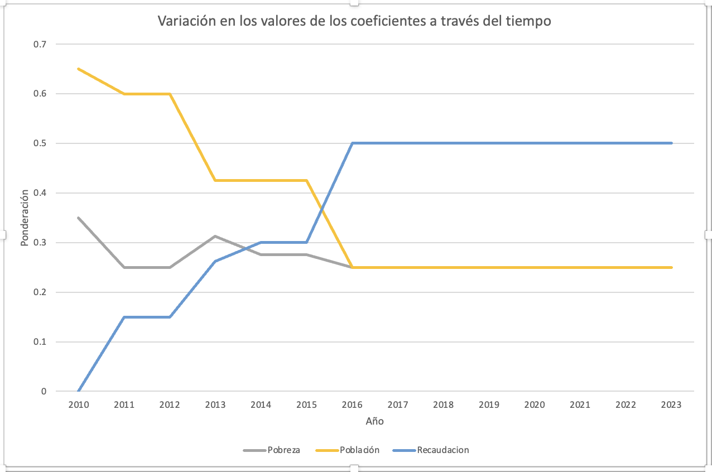

Column 2 · Published in Spanish, early 2024
In my previous column I pointed to the troubling disparity in how funds are distributed among municipalities in Nuevo León. I showed how San Pedro receives a much larger allocation per person than peripheral municipalities such as Juárez. This fiscal inequality directly affects the quality and quantity of public services that residents of the less favored municipalities receive. Unfortunately, the gap, already serious in 2010, has grown. How did a bad situation get worse in just a decade?
In 2010 the distribution of funds was based mainly on each municipality’s population (65%) and poverty (35%). Over time, as Chart 1 shows, a new factor emerged: tax-collection efficiency. This coefficient encourages municipalities to raise more revenue locally, but it ignores those that lack the resources to run effective collection campaigns. It also favors municipalities with more valuable homes, and hurts places like Juárez, where properties have lower assessed values and many are abandoned.
The problem deepened when the new Ley de Coordinación Hacendaria took effect in 2016 and locked this bias into the distribution formula. Collection efficiency now carries a weight of 50%, while poverty and population carry only 25% each. This approach widens the gap: those who start with more receive even more.
The population coefficient could balance the formula by allocating resources equally per person, but in Nuevo León it carries a weight of only 22.5%, compared with 67% in Mexico City. To make matters worse, for various legal reasons and because of the pandemic, the formula still uses population figures from the 2010 census instead of the 2020 census. That ignores the large growth of many peripheral municipalities. Juárez, for example, had 256,000 residents in 2010 and has 471,000 today. San Pedro, by contrast, barely grew, from 122,000 people in 2010 to 132,000 in 2020.
In short, Nuevo León urgently needs to review and adjust its formula for distributing funds. Current policy favors inequity, hurts the most vulnerable municipalities and limits access to vital public services. We need to address this decisively: re-evaluate how we allocate resources and commit to reflecting our state’s demographic reality more accurately and fairly.
